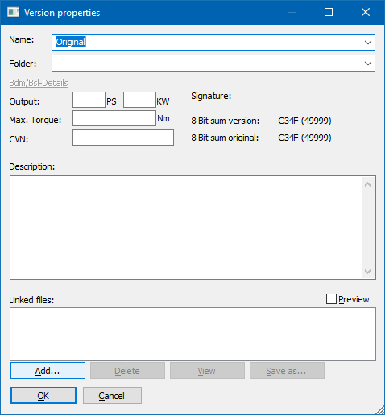

|
The dialog Properties: Version (Menu Project) |

  
|
|
The dialog Properties: Version (Menu Project) |
|

Use this dialog to edit the properties of the current version of the project.
Name |
A title which is also displayed in the selection list when opening the project. Open the combo-box to see the names of other open projects or to select a files with a list of names. This name list is a text file that you create, with one name per line. It can contain the usual placeholders such as %Client.Licenceplate%. |
Folder |
The project is organized in this version folder. (Can be empty) |
Comment |
A user-defined description of the version. |
Linked files |
This field can store a list of files that are related to the current version. The files are not used by WinOLS, but the list is stored here for your reference only. The project version stores link to the files only (and not their contents). To add files, use the "Add" button or drag+drop the files into the field. Double-click a list entry to open the file. If you rather want to store the link for all versions use the "Comment" button in the project properties. Files can be detected automatically in the autodiscover path. These files cannot be deleted. |
Signature |
If this project version was signed (with the sign hexdump function) the signature text will be displayed here. |
8 bit sum |
The 8 bit sum of the original and the current version is displayed here |
Shortcuts
| Symbol bar: |
| Keyboard: | Shift+Alt+Enter |